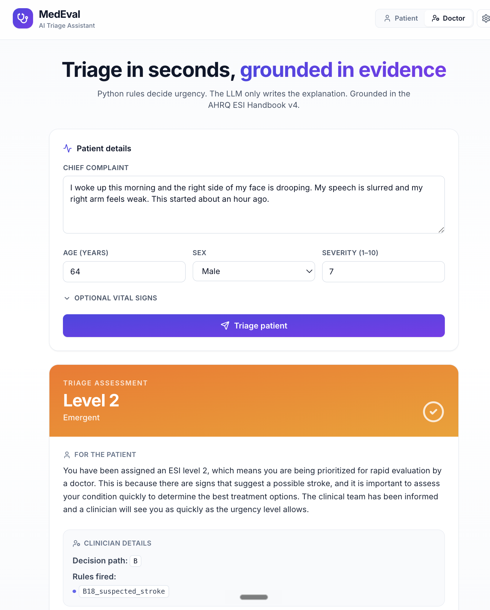
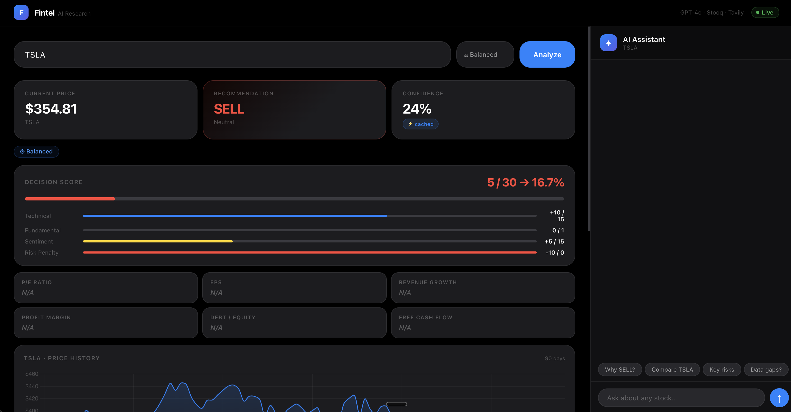
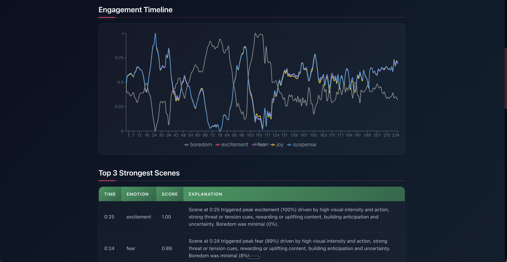
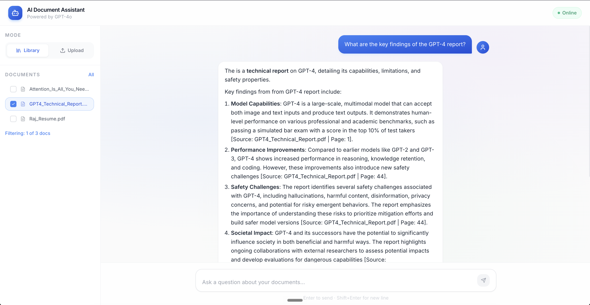

Available for full-time roles
Selected Work

Deterministic ESI triage engine — LLM structurally barred from urgency decisions. 68 ACEP handbook rules fire in a Python engine; GPT-4o-mini only extracts facts. Under-triage rate reduced from 20% → 10%.

7-step async LangGraph pipeline generating auditable BUY/HOLD/SELL recommendations in under 30 seconds. GPT-4o constrained to explanation-only. Zero hallucination risk on decisions.

Predicts second-by-second fMRI activations across 20,484 cortical vertices for movie trailers using Meta FAIR's TRIBE v2. Three neural networks feed 5 emotion channels across 7 brain regions. PR #20 to Meta FAIR — CLA signed.

Production RAG system with MMR retrieval, hallucination guardrails, and a rule-based query classifier — no LLM call fires without sufficient retrieval confidence.

A B O U T
I design and deploy complete AI systems — not just notebooks. A model that never leaves a researcher's laptop isn't a product, it's a cost. Every system I've built started with a process someone was doing manually. My job was to make that unnecessary.
Engineered across the full stack: LLM agents and RAG pipelines, computer vision, predictive ML, and AWS cloud infrastructure. I care less about validation loss and more about what happens when the system goes live.
Hover over a skill for proficiency level
Actively looking · Available now
I'm looking for a full-time AI/ML Engineering role where there's a real problem — a bottleneck, a slow decision, a process someone is doing by hand. I reply within 24 hours.